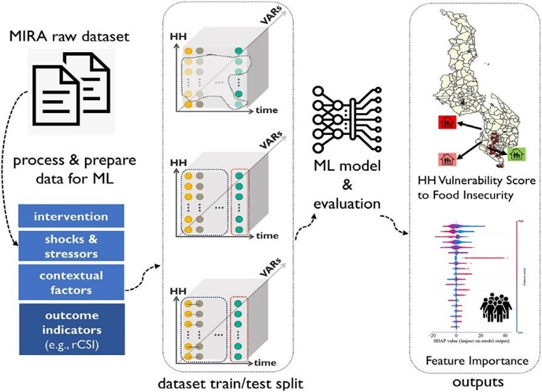

Hi! I am Allen Chiu, a junior at the University of Georgia, pursuing a degree in Computer Science. I have a passion for technology and innovation, and is always looking for new ways to apply my skills and knowledge to real-world problems. I am always eager to learn new technologies and frameworks.
Using C to implement a CPU program that finds all of the diagonal sums equal to an integer in an input text file consisting of a 2D grid of
n-by-n digits (1 through 9), using a single thread or multiple threads.
Utilizing the pthread library to create and manage multiple threads for parallel processing on a UNIX system and Windows Thread API for Windows systems.
Using Cuda to implement a GPU program that finds all of the diagonal sums equal to an integer in an input text file consisting of a 2D grid of
n-by-n digits (1 through 9), using GPU threads.
Utilizing GPU kernels to parallelize the computation of diagonal sums on the GPU, optimizing memory access patterns and thread synchronization for efficient execution.
Food Insecurity Machine Learning Research

Hypothesised, researched, and investigated food insecurity in the US based on a pertinent set of factors and
attributes (Household size and income, COVID-19 pandemic, economic downturn and upturn, etc.)
Drew data-driven conclusions on factors that had the most detrimental impact on food insecurity in the US from
2010-2020, which was the COVID-19 pandemic, metropolitan regions of the southern US, and economic instability.
Utilized Python, Pandas, NumPy, and Matplotlib to clean, analyze, visualize, and model the data.
Created a machine learning model that predicted food insecurity in the US using a Random Forest Classifier.
Concluded research and analysis with analysis-driven next steps and improvements to lessen food insecurity.
iTunes Gallery using iTunes API
This project implements a GUI application in Java using JavaFX 17 that displays a gallery of images based on the results of search query to the iTunes Search API.
The gallery will rotate through images from the API query much like an actual gallery through the use of looping through the hashset of links.